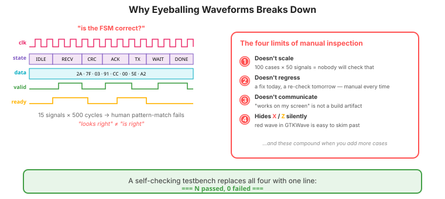
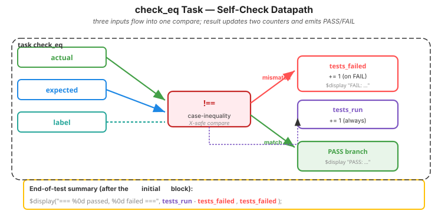
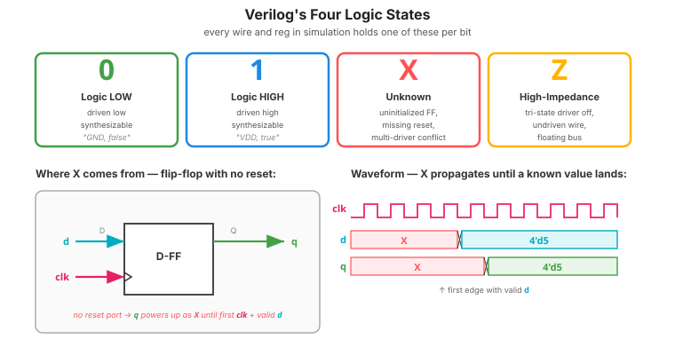
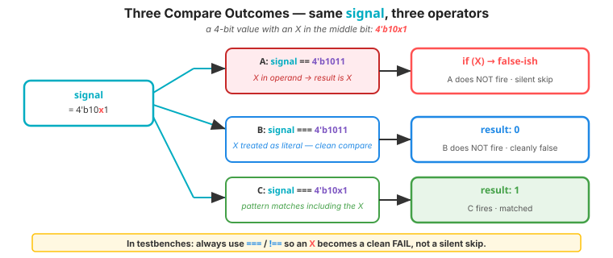
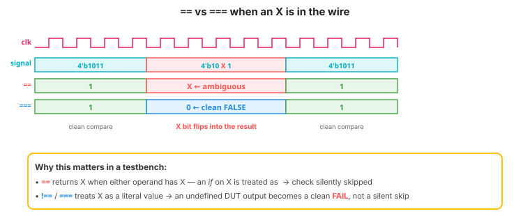

Video 2 of 4 · ~12 minutes
Dr. Mike Borowczak · Electrical & Computer Engineering · CECS · UCF
A regression run at Apple's CPU team kicks off a hundred thousand tests at midnight. In the morning, the engineer reads one number: “0 failed.” Not a hundred thousand waveforms. Not even one. The waveform viewer is the microscope you reach for after something is already known to be broken — never the way you find out it's broken.
When verification depends on a human eyeballing waves, humans get tired. They miss things. They mark passes that aren't passes. Bugs that ought to die in nightly regression slip past and arrive in customers' hands instead. The Ariane 5 telemetry, examined post-mortem, plainly showed the overflow — no automated check had been written to notice. Every “I'll just take a quick look at the wave” workflow scales until it doesn't.
“I'll run the simulation, open GTKWave, check that the outputs look right. If I add more tests later I'll just re-check by eye.”
Manual inspection does not scale, does not regress, and does not communicate. A self-checking testbench codifies expected behavior, compares it against actual behavior, and emits a structured PASS/FAIL report.

integer tests_run = 0, tests_failed = 0;
task check_eq(input [31:0] actual, input [31:0] expected, input [256*8-1:0] label);
begin
tests_run = tests_run + 1;
if (actual !== expected) begin // use !== to handle X/Z correctly
tests_failed = tests_failed + 1;
$display("FAIL: %0s actual=%h expected=%h", label, actual, expected);
end else begin
$display("PASS: %0s = %h", label, actual);
end
end
endtask
initial begin
// ... drive stimulus ...
check_eq(sum, 5'd8, "5+3");
check_eq(sum, 5'd16, "7+9");
// ... more ...
$display("=== %0d passed, %0d failed ===", tests_run - tests_failed, tests_failed);
$finish;
end!== for X/Z safety, (2) integer counters tests_run / tests_failed, (3) end-of-test summary. Block diagram on the next slide.
check_eq — as a Datapath Diagram
!== compare. The result splits: mismatch increments tests_failed and fires FAIL; match fires PASS. tests_run always increments.
Before we compare signals, know what a signal can be. Every Verilog bit in simulation is one of four values — not two:

X. The X propagates through every gate it touches until something forces it to a known value. If your testbench compares against X using the wrong operator, the compare itself becomes X — and silently looks like “pass.” That's why the next slide matters.
== vs ===reg [3:0] signal = 4'b10x1;
if (signal == 4'b1011) $display("A fires?"); // result: X — if-condition is ambiguous
if (signal === 4'b1011) $display("B fires?"); // result: 0 — cleanly false, B does not fire
if (signal === 4'b10x1) $display("C fires?"); // result: 1 — matches including X, C fires
if, X is treated as false — check is silently skipped. === treats X as a literal — clean 0 or 1. In testbenches, always use === and !==.

$ make sim
PASS: reset → count=0
PASS: 1 cycle → count=1
FAIL: 5 cycles → count=5 actual=xxxx expected=5
PASS: rollover → count=0
FAIL: enable test actual=0 expected=1
=== 3 passed, 2 failed ===Two failures. What are the likely root causes?
~5 minutes
▸ COMMANDS
cd lecture_examples/week2_day06/d06_s1_ex1/
# before: prints values
# after: PASS/FAIL + summary
diff tb_adder_before.v tb_adder_after.v
make sim▸ EXPECTED STDOUT
PASS: 0 + 0 = 0
PASS: 1 + 2 = 3
PASS: 200 + 100 = 300
PASS: 255 + 1 = 256
=== 4 passed, 0 failed ===▸ KEY OBSERVATION
The Makefile's make sim can now grep for “0 failed” to determine pass/fail automatically — enabling scripting, CI, and honest grading.
Same answer as before — testbenches don't synthesize. But now the difference matters:
# Your DUT (adder.v) synthesizes:
$ yosys -p "synth_ice40 -top adder" ...
SB_LUT4: 4 SB_CARRY: 4
# Your testbench (tb_adder.v) does not:
$ yosys -p "synth_ice40 -top tb_adder" ...
ERROR: unsynthesizable constructs
# make stat runs ONLY on the DUT.
# make sim runs ONLY the testbench.
# They never mix.make sim is where verification lives. make stat is where synthesis lives. Self-checking testbenches are the contract between them.
Ask AI: “Refactor this testbench to be self-checking with PASS/FAIL output and a summary line. Use !== for comparisons.”
TASK
Ask AI to self-check an existing testbench.
BEFORE
Predict: a check task, !== compare, counter-based summary.
AFTER
Strong AI uses !==. Weak AI uses != and handles X poorly.
TAKEAWAY
Test your AI by giving it code with an X and checking it handles the compare correctly.
① Manual waveform inspection is for debugging, not verification.
② Every testbench must print PASS/FAIL + a summary line.
③ Use !== (case-inequality), never !=, for output checks.
④ Grep "0 failed" from your Makefile for honest CI.
🔗 Transfer
Video 3 of 4 · ~8 minutes
▸ WHY THIS MATTERS NEXT
You already met task in this video. Video 3 goes further: using tasks to clean up stimulus-and-check patterns so that each test case becomes a single readable line. This is how professional verification engineers structure their testbenches.